Supercharge R with Spark: Getting Apache's SparkR Up and Running on Amazon Web Services (AWS)
Practical walkthroughs on machine learning, data exploration and finding insight.

Resources
Spark doesn’t need an introduction, but just in case, it extends Hadoop’s distributed / parallel computing paradigm by using both live memory in addition to disk storage. This makes for a much faster tool. As of version 1.4, SparkR is included in Apache’s Spark build. We’ll be using version 1.5 in this walk-through.
This will be a two-part series, here we’ll install SparkR on EC2 and fire up a few clusters. In the second part, will do some distributed modeling.
- AWS Instance
- Installing Spark
- Creating Clusters
- Connecting to the Master Cluster
- Working with RStudio
Cluster Launcher
AWS Instance
In order to approach this from the same vantage point, we’ll use a small EC2 instance to launch our Spark clusters. You will need an amazon AWS account and the ability to Secure Shell Tunneling (SSH) into AWS (more on this later). Keep in mind that AWS instances cost money and the more clusters you need, the more money Amazon will charge. So, always remember to Stop or Terminate you instances when not needed!
First, sign into the AWS Console:

VPC
Under header Networking, select VPC:
A virtual private cloud (VPC) will determine who and what gets to access the site. We will use the wizard and content ourselves with only on VPC. In an enterprise-level application, you will want at least 4, 2 to be private and run your database, and two to be public and hold your web-serving application. By duplicating the private and public VPCs you can benefit from fail-over and load balancing tools. For our purposes, we’ll just go with one public VPC:
Start the wizard:
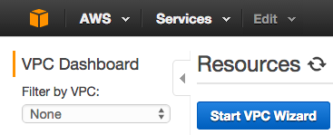
Start the wizard and select VPC with a Single Public Subnet:

Most of the defaults are fine except you should add a name under VPC name:

EC2
VPC is done, let’s now create our EC2 instance - this is going to be our cluster-launching machine. Click on the orange cube in the upper left corner of the page. From the ensuing menu, choose the first option, EC2:
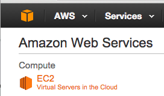
</p>
In Create Instance, select Launch Instance:
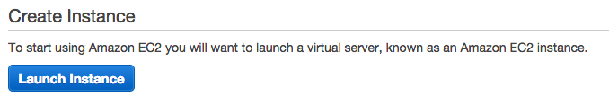
Select the first option Amazon Linux AMI:

In Step 2, continue with the preselected machine and click Next: Configure Instance Details:

In Step 3, keep all defaults but change the Auto-assign Public IP to Enable:
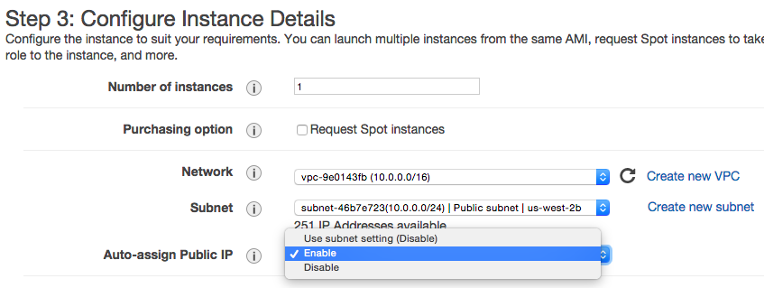
Select Review and Launch:

In Step 7, SSH port 22 is opened by default so there is nothing for us to do but to click Launch. It will open a pop-up box where you will need to create a new key pair:

Key-pair is a security file that will live on your machine and is required to SSH into the instance. I tend to create them and leave them in my downloads. What ever you decided to do, make sure you know where it is as you’ll need to pass a path to it every time you want to connect to it. Create a new one, check the acknowledgment check-box.
Finally, click Launch Instances. That’s it for our instance. Hit the View Instances on the next page as the machine is being initialized:

We need to wait till the Initializing is done. Meanwhile we can get the security credentials that will be needed to launch the clusters. Go to your account name drop down in the top right corner and click Security Credentials:
Choose Access Keys
And Create Access Key
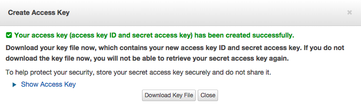
This will download two strings:
AWS_ACCESS_KEY_ID=...
AWS_SECRET_ACCESS_KEY= ...
Keep that download handy as we’ll need the values shortly.
Back at the instance window, check that our new instance is running, you can click on the check box to access the assigned dynamic IP address:
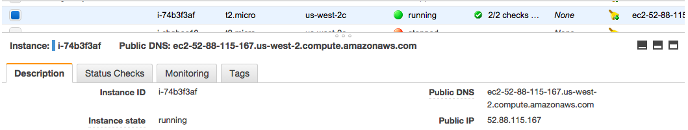
Connecting to EC2
Use the Actions button to get the exact SSH string to reach the instance:
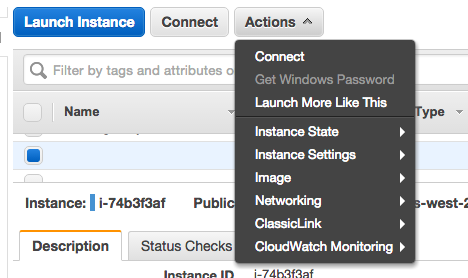
And select Connect:

Read the instruction on the pop-up box. The last line states your connection string: ssh -i "demo.pem" ec2-user@52.88.115.167. To use it on the Mac, open your terminal and navigate to your Downloads folder (or wherever you moved your pem key-pair file). As per instructions, apply chmod 400 demo.pem and copy the example string.
SSH
Paste it into the terminal and follow the instructions to log into your EC2 instance:
ssh -i "demo.pem" ec2-user@52.88.115.167
Your terminal should confirm the EC2:
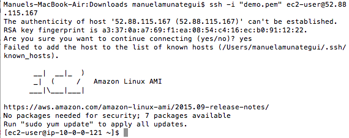
Installing Spark
This instance will be used to launch our Master and Dependent clusters. Let’s get the download URL path for Spark (from the downloads page for the latest version):
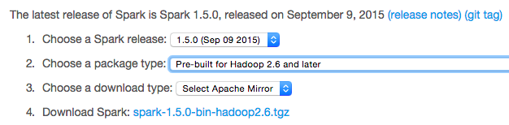
We’ll use wget to download Spark directly into our instance, paste the following commands into the terminal:
# download spark
sudo wget http://d3kbcqa49mib13.cloudfront.net/spark-1.5.0-bin-hadoop2.6.tgz
# unpack spark tgz file
sudo tar zxvf spark-1.5.0-bin-hadoop2.6.tgz
Now we need to download our PEM key-pair file over to the instance as well. Exit out of the EC2 session and use the scp command (Secure Copy):
# get out of current session and back to local machine
exit
# upload pem file in same directory on the EC2 instance (swap the dashed IP with your instance's)
scp -i demo.pem demo.pem ec2-user@ec2-52-88-115-167.us-west-2.compute.amazonaws.com:/home/ec2-user/spark-1.5.0-bin-hadoop2.6/ec2
Now we go back to the EC2 box:
ssh -i "demo.pem" ec2-user@52.88.115.167
# navigate to the ec2 folder:
cd spark-1.5.0-bin-hadoop2.6/ec2
# change file permissions
sudo chmod 400 demo.pem
We also need to export our access keys:
Set access keys:
export AWS_ACCESS_KEY_ID=...yours here...
export AWS_SECRET_ACCESS_KEY=...yours here...
Creating Clusters
Now, let’s get our clusters up and running. This will call the script to launch 3 clusters, 1 master and 2 dependents in the us-west zone. -k is your PEM name, -i is the path to the PEM file, -s is the number of instances needed and -t is the server type:
# launch clusters
./spark-ec2 -k demo -i demo.pem -r us-west-2 -s 2 -t m1.small launch --copy-aws-credentials my-spark-cluster
Building the clusters takes about 15 minutes. The terminal window may spit out some waiting, disconnected, or connection refused messages but as long as it doesn’t return the prompt, let it do its thing as it needs to set up each instance and install a lot of software on all of them.
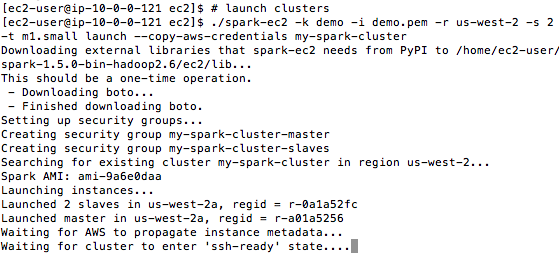
Connecting to the Master Cluster
One of the last lines in the terminal window will be the master IP address - but you can also get it from the instance viewer on the AWS website.
The master cluster is where we need to run RStudio. It is automatically installed for us (nice!). To check that our clusters are up and running, connect to the Spark Master window (swap the master IP address with yours):
http://52.13.38.224:8080/

We confirm that we have two dependent clusters with status Alive. In order to log into RStudio, we need to first SSH into the instance and create a new user.
# log into master instance
ssh -i "demo.pem" ec2-52-13-38-224.us-west-2.compute.amazonaws.com
# add new user (and you don't have to use my name) and set a passwd
sudo useradd manuel
sudo passwd manuel
Working with RStudio
The credentials we just created are what we’ll use to log into RStudio Server:
# log into r studio
http://52.13.38.224:8787/
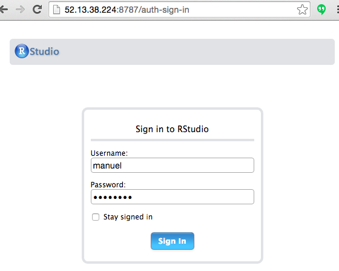
Let’s get some data through these clusters
Just a quick example from the 1.5 Spark documentation to show that this works. Paste the following code into RStudio running on your master cluster:
# from blog: http://blog.godatadriven.com/sparkr-just-got-better.html
.libPaths(c(.libPaths(), '/root/spark/R/lib'))
Sys.setenv(SPARK_HOME = '/root/spark')
Sys.setenv(PATH = paste(Sys.getenv(c('PATH')), '/root/spark/bin', sep=':'))
library(SparkR)
# initialize the Spark Context
sc <- sparkR.init()
sqlContext <- sparkRSQL.init(sc)
# create a data frame using the createDataFrame object
df <- createDataFrame(sqlContext, faithful)
head(df)
## eruptions waiting
## 1 3.600 79
## 2 1.800 54
## 3 3.333 74
## 4 2.283 62
## 5 4.533 85
## 6 2.883 55
# try simple generalized linear model
model <- glm(waiting ~ eruptions, data = df, family = "gaussian")
summary(model)
## $coefficients
## Estimate
## (Intercept) 33.47440
## eruptions 10.72964
# see how well it predicts
predictions <- predict(model, newData = df)
head(select(predictions, "waiting", "prediction"))
## waiting prediction
## 1 79 72.10111
## 2 54 52.78775
## 3 74 69.23629
## 4 62 57.97017
## 5 85 82.11186
## 6 55 64.40795
And to prove that all clusters went to work, check out the Spark Master:
http://52.13.38.224:8080/
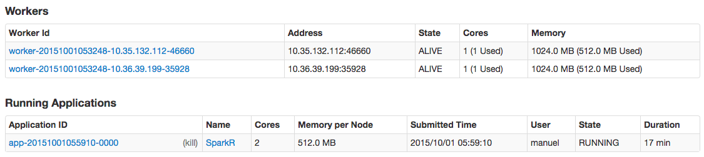
K- we’re done for now. Don’t forget to terminate all your EC2 instances you created!
# handy command to kill all Spark clusters part of my-spark-cluster
./spark-ec2 -k demo -i demo.pem -r us-west-2 destroy my-spark-cluster
In the next walk-through, we’ll dig deeper by using distributed data frames along with regression and classification modeling examples.
Cheers!